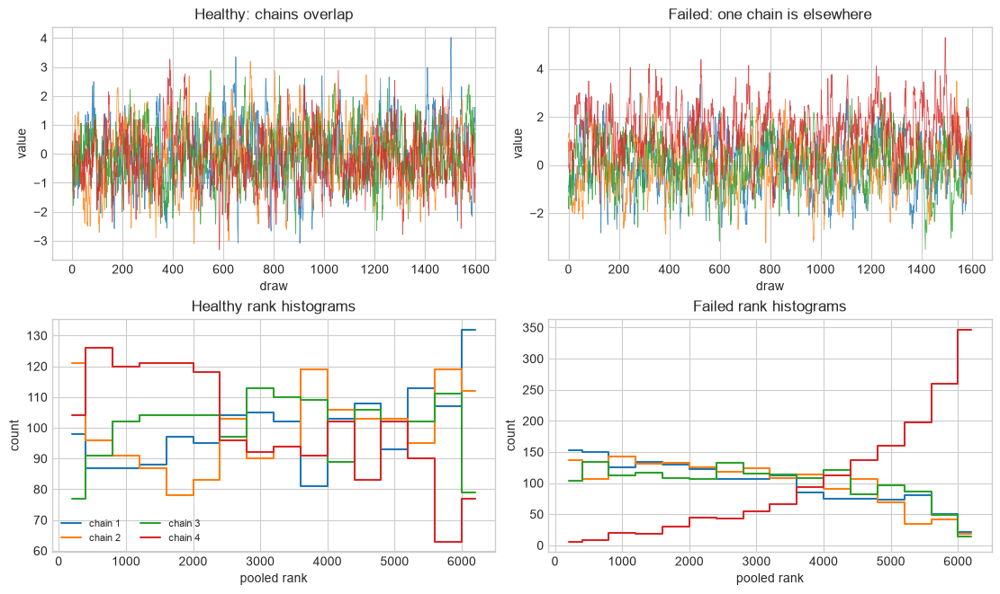

Extension lab: can you trust the sampler?#
FQCP 2026 · Convergence, geometry, and predictive diagnostics
A corner plot is not a convergence test. This short lab separates three questions:
Mixing: did independent chains explore the same distribution?
Geometry: did the algorithm encounter regions it could not traverse faithfully?
Model adequacy: can the fitted model reproduce or predict data?
The first two diagnose the computation. The third diagnoses the model. A sampler can pass while the model is wrong, and a good model can still be fit by a failed sampler.
1. Four chains: one healthy example, one stuck example#
The draws below are synthetic Markov chains, not a fitted scientific model. Their autocorrelation makes them useful for seeing what the diagnostics detect.
import warnings
import numpy as np
import matplotlib.pyplot as plt
from scipy.stats import norm, rankdata
warnings.filterwarnings("ignore", message="IProgress not found.*")
from numpyro.diagnostics import effective_sample_size, split_gelman_rubin
rng = np.random.default_rng(20260903)
plt.style.use("seaborn-v0_8-whitegrid")
def ar1_chains(means, draws=1600, correlation=0.85):
"""Simulate stationary autocorrelated chains with chosen means."""
chains = np.empty((len(means), draws))
innovation_scale = np.sqrt(1 - correlation**2)
for chain_index, mean in enumerate(means):
chains[chain_index, 0] = mean + rng.normal()
for draw in range(1, draws):
chains[chain_index, draw] = (
mean
+ correlation * (chains[chain_index, draw - 1] - mean)
+ innovation_scale * rng.normal()
)
return chains
good_chains = ar1_chains([0.0, 0.0, 0.0, 0.0])
stuck_chains = ar1_chains([0.0, 0.0, 0.0, 1.5])
Predict before plotting: which failure should be easier to see in a trace plot: strong autocorrelation within every chain, or one chain sampling a different location?
def rank_normalise(chains):
ranks = rankdata(chains.ravel(), method="average")
transformed = norm.ppf((ranks - 3 / 8) / (ranks.size + 1 / 4))
return transformed.reshape(chains.shape)
def rank_normalised_rhat(chains):
"""Maximum of rank-normalised split and folded-split R-hat."""
rank_rhat = float(split_gelman_rubin(rank_normalise(chains)))
folded = np.abs(chains - np.median(chains))
folded_rhat = float(split_gelman_rubin(rank_normalise(folded)))
return max(rank_rhat, folded_rhat)
def bulk_and_tail_ess(chains):
bulk = float(effective_sample_size(rank_normalise(chains)))
lower, upper = np.quantile(chains, [0.05, 0.95])
lower_indicator = (chains <= lower).astype(float)
upper_indicator = (chains >= upper).astype(float)
tail = min(
float(effective_sample_size(lower_indicator)),
float(effective_sample_size(upper_indicator)),
)
return bulk, tail
def rank_histogram(ax, chains, title):
ranks = rankdata(chains.ravel()).reshape(chains.shape)
bins = np.linspace(0.5, ranks.size + 0.5, 17)
for chain_index, chain_ranks in enumerate(ranks):
counts, edges = np.histogram(chain_ranks, bins=bins)
centres = 0.5 * (edges[:-1] + edges[1:])
ax.step(centres, counts, where="mid", label=f"chain {chain_index + 1}")
ax.set(xlabel="pooled rank", ylabel="count", title=title)
fig, axes = plt.subplots(2, 2, figsize=(11, 6.5), constrained_layout=True)
for chain_index in range(good_chains.shape[0]):
axes[0, 0].plot(good_chains[chain_index], lw=0.55, alpha=0.8)
axes[0, 1].plot(stuck_chains[chain_index], lw=0.55, alpha=0.8)
axes[0, 0].set(xlabel="draw", ylabel="value", title="Healthy: chains overlap")
axes[0, 1].set(xlabel="draw", ylabel="value", title="Failed: one chain is elsewhere")
rank_histogram(axes[1, 0], good_chains, "Healthy rank histograms")
rank_histogram(axes[1, 1], stuck_chains, "Failed rank histograms")
axes[1, 0].legend(fontsize=8, ncol=2)
plt.show()
for name, chains in [("healthy", good_chains), ("stuck", stuck_chains)]:
rhat = rank_normalised_rhat(chains)
bulk_ess, tail_ess = bulk_and_tail_ess(chains)
mcse_mean = np.std(chains, ddof=1) / np.sqrt(bulk_ess)
print(
f"{name:7s}: R-hat={rhat:.3f}, bulk ESS={bulk_ess:.0f}, "
f"tail ESS={tail_ess:.0f}, MCSE(mean)={mcse_mean:.3f}"
)

healthy: R-hat=1.005, bulk ESS=621, tail ESS=1045, MCSE(mean)=0.039
stuck : R-hat=1.186, bulk ESS=7, tail ESS=23, MCSE(mean)=0.443
2. What the chain summaries mean#
Check |
Question |
How to read it |
|---|---|---|
rank-normalised split \(\widehat R\) |
do between-chain and within-chain variation agree? |
values near 1 are necessary; use \(\widehat R<1.01\) as a strong default, not a proof |
bulk ESS |
how many independent draws inform locations such as the mean or median? |
report ESS, not just stored draws |
tail ESS |
are intervals and tail probabilities estimated precisely? |
especially important for credible bounds and rare-event probabilities |
MCSE |
how much numerical error remains in a reported posterior summary? |
it should be small relative to the precision you quote |
trace and rank plots |
did chains mix locally and occupy the same ranks? |
look for sticking, drift, separated chains, or uneven ranks |
Modern \(\widehat R\) uses rank normalisation, chain splitting, and folding so it can detect more than a difference in means. It still cannot prove global convergence: four chains can all become trapped in the same mode. Start chains from dispersed locations and inspect scientifically important derived quantities, not only the sampled coordinates.
3. NUTS and HMC: inspect the trajectory geometry#
Good \(\widehat R\) and ESS do not excuse a transition-level warning.
Warning |
What it suggests |
First response |
|---|---|---|
divergent transitions |
the numerical trajectory could not follow a region of posterior curvature |
locate divergences in parameter space; reparameterise, rescale, or reconsider the model |
maximum tree depth |
NUTS repeatedly needed a longer trajectory than allowed |
inspect scaling and geometry before merely raising the limit |
low E-BFMI |
momentum resampling is exploring the energy distribution poorly |
inspect energy plots and consider reparameterisation |
very low acceptance |
proposals or trajectories are too aggressive |
retune step size or proposal scale |
very high acceptance |
possibly tiny steps and inefficient exploration |
check ESS per second, not acceptance alone |
Raising target_accept can remove some divergences by reducing the step size,
but persistent divergences usually demand a better parameterisation. The goal
is not to silence the warning; it is to make the posterior geometry tractable.
4. Other samplers need different checks#
Method |
Minimum useful checks |
|---|---|
random-walk or ensemble MCMC |
multiple runs, \(\widehat R\), bulk/tail ESS, MCSE, autocorrelation, trace/rank plots, mode coverage |
HMC / NUTS |
all MCMC checks plus divergences, tree depth, E-BFMI, acceptance, and step size |
nested sampling |
repeated-run stability of \(\log\mathcal Z\) and posterior summaries, live-point adequacy, termination error, posterior weights, and mode recovery |
variational inference |
several initialisations, ELBO stability, comparison with a trusted sampler on representative cases, predictive checks, and coverage tests |
An error bar reported by nested sampling or a stable ELBO from VI is not a universal convergence certificate. Each algorithm’s approximation can fail in a different way.
5. PSIS-LOO answers a different question#
Leave-one-out cross-validation asks how well the fitted model predicts each observation when that observation is left out:
Pareto-smoothed importance sampling (PSIS) approximates those leave-one-out fits by reweighting draws from the full posterior. The Pareto shape diagnostic \(\widehat k\) checks whether those importance weights have a manageable tail.
PSIS-LOO requires a pointwise log-likelihood, one contribution per observation and posterior draw.
A problematic \(\widehat k\) identifies an influential observation or an unreliable importance-sampling approximation. Use the software’s sample-size-dependent threshold; then consider moment matching, an explicit leave-one-out refit, or \(K\)-fold cross-validation.
PSIS-LOO compares predictive performance. It does not establish that the chains converged, and it should be computed only after sampler diagnostics pass.
Posterior predictive checks ask whether a model can reproduce relevant data features. PSIS-LOO asks how well it predicts held-out observations. Both come after computational checks.
6. Your turn: diagnose three reports#
For each report, write one of: sampler failure, predictive warning, or
no obvious failure, followed by the next action you would take.
reports = {
"A": {"rhat": 1.003, "bulk_ess": 1800, "divergences": 9, "max_k": 0.42},
"B": {"rhat": 1.040, "bulk_ess": 95, "divergences": 0, "max_k": 0.38},
"C": {"rhat": 1.002, "bulk_ess": 1500, "divergences": 0, "max_k": 0.91},
}
for label, report in reports.items():
print(label, report)
# Add your verdicts here.
verdicts = {}
A {'rhat': 1.003, 'bulk_ess': 1800, 'divergences': 9, 'max_k': 0.42}
B {'rhat': 1.04, 'bulk_ess': 95, 'divergences': 0, 'max_k': 0.38}
C {'rhat': 1.002, 'bulk_ess': 1500, 'divergences': 0, 'max_k': 0.91}
Hint
Check computation before prediction. Any divergence needs investigation; \(\widehat R=1.04\) and low ESS indicate poor mixing; a high Pareto \(\widehat k\) does not by itself say that MCMC failed.
Solution check
A — sampler failure: locate the divergent draws and repair or retune the geometry before using the posterior.
B — sampler failure: run longer only after checking chains, modes, scaling, and parameterisation; more draws from a stuck chain do not help.
C — predictive warning: the chains have no obvious listed failure, but PSIS-LOO is unreliable for at least one observation. Inspect it and use moment matching, an explicit refit, or \(K\)-fold validation.
A practical order of operations#
Run multiple dispersed chains or independent runs.
Check \(\widehat R\), bulk/tail ESS, MCSE, trace plots, and rank plots.
Check sampler-specific warnings such as divergences or evidence stability.
Only then interpret posterior summaries.
Check the model with prior/posterior predictions and calibration.
Use PSIS-LOO or another held-out method when predictive comparison is the scientific question.
Read or try next#
Vehtari et al., Rank-normalization, folding, and localization develops the modern \(\widehat R\), bulk/tail ESS, and rank-plot recommendations.
The Stan diagnostic guide explains divergences, tree depth, E-BFMI, ESS, and \(\widehat R\) in practice.
Vehtari et al., Pareto Smoothed Importance Sampling defines PSIS and the Pareto \(\widehat k\) diagnostic.
Gelman et al., Bayesian Workflow places computational checks, predictive checks, and model revision in one analysis workflow.
Next: